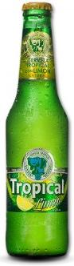

Vista de productos
Contacto

Tropical Limón
Origen
Gran Canaria
Descripción
Todo lo bueno de una Tropical con auténtico zumo de limón (Radler) y bajo índice de contenido alcohólico, de apenas un 2%.
Formato de venta
Botellín de cerveza sabor limón, 25cl
Precio
0,78€